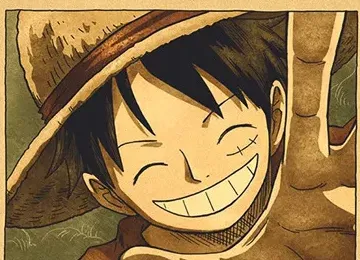

Procura-se: informação sobre One Piece.
Comecei este site como trabalho de Introdução à Tecnologia Web, no curso de Sistemas de Informação da UNIRIOS, e acabei virando o caderno onde anoto tudo sobre a obra. Os dados vêm da API One Piece, então a lista cresce sozinha.
Contando os personagens, tripulações, frutas e espadas da API…

Monkey D. Luffy 3.000.000.000 –Quem vale mais
As dez maiores recompensas da API. A barra mostra o tamanho de cada uma perto da maior.
A rota do bando
As sagas na ordem em que o Chapéu de Palha passou por elas. Arraste para o lado.
O bando do Chapéu de Palha
Recompensas atuais. Clique num cartaz para abrir a ficha.
Os Quatro Imperadores hoje
- Monkey D. LuffyPiratas do Chapéu de Palha
- Shanks, o RuivoPiratas do Ruivo
- Marshall D. TeachPiratas do Barba Negra
- Buggy, o PalhaçoCross Guild
Quanto vale a sua cabeça?
Escreva seu nome, escolha uma foto e uma recompensa, e baixe o seu cartaz de procurado. A foto não sai do seu computador.